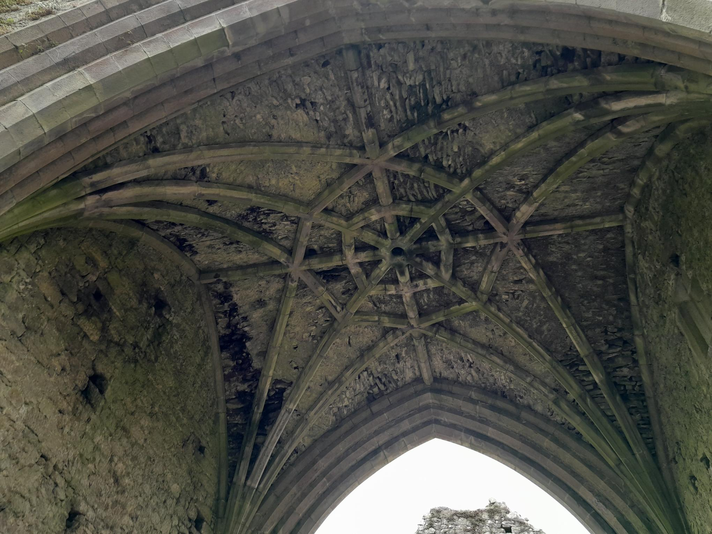
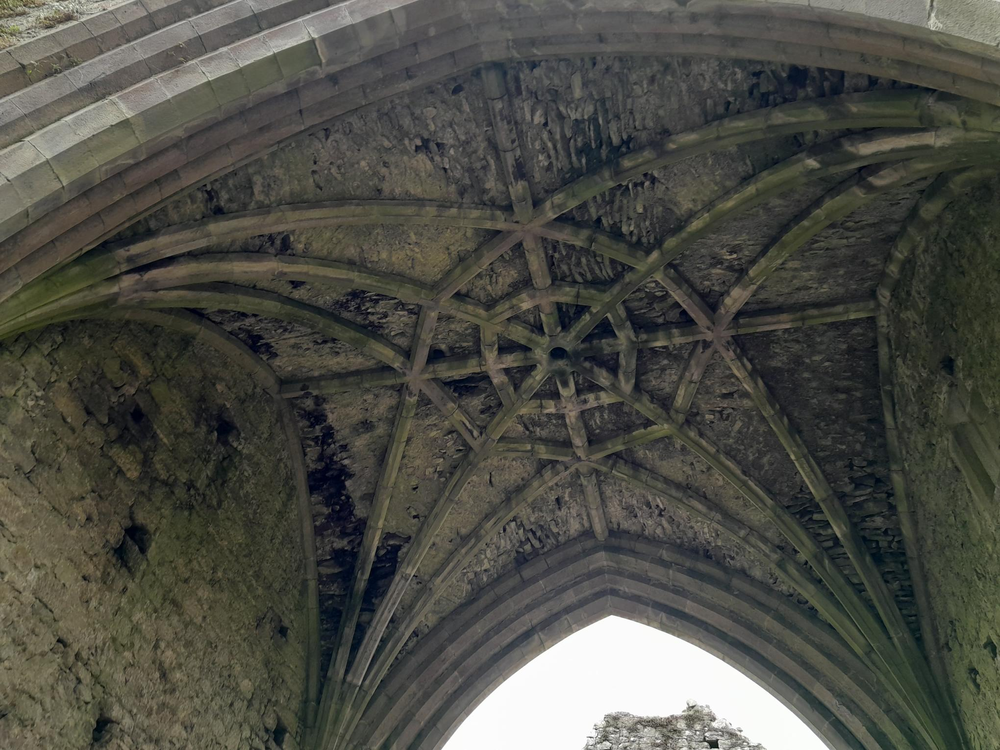

This page introduces you to the local area of Walnut Bay from the sea front to area around
We hope this intrigues your interest and puts Walnut Bay on your next travel destination
Or if you are a local and you discover a hidden gem even you werent aware of, just on your doorstep.
Our images do come from our visiters, and we update them weekly along with the text,
if you wish to submit check out our contact page.
Located on Dog’s Hill, both look over the bay and surrounding area.
The Hill is a public park, with many trails through the forest and walkways to reach the
top. And, given its name your sure to meet a lot of dogs, please note there is no leash
rule in acted. It is wheelchair accessible from the right hand side of the hill from Oakfield
Road entrance. Enjoy the ever changing views that this coast hill brings.


This castle stands the test of time, set in the south region of Walnut Bay.
Just 15 minutes away from Walnut Harbour, with on location parking an all day parking
rate of €4.50. This castle is the home of the historical kings of South Dublin.
With impressive buildings and an onsite graveyard there is tones to explore and learn.
Along with this castle nearby there is Abbey ruins which is free to access
if you arent afraid of cows. A great family day out, on the local bus route.


 

Fresh salt water beach, that is over looked by a Watch Tower called Mello Tower that was used
during World War II. This beach has a soft current but the waves do reach the path an even
though protected in the bay this can by rough during strong weather at high tide. During
low s the water reaches ankle height and goes out for a could 50 feet before height is
swimmable. If you aren't into this, the beach does have rock pools to explore sea creatures
and different types of sea weed. We do advise not to disturb or damage this enviroment.
A great family day out, with acces to local Dart.


The food market is a bustling weekend event every Sunday, come rain or shine this event is on.
You will find a variety of items, originally known as the food market, it has become known as
the food market due to the high multicultural cuisine for offer. You will still find fresh
produces that made the market famous. But you will also be expose to culture and art. The
original market still stands in the Public Park but as its gotten bigger it has moved outside
and along the coast road to the towns Library grounds. There is no parking for the event but
you will find around the town and local area, please note that parking is free on Sunday on
public roads. Please check the private roads for parking times as each vary.


Walnut Bay Town was once a thriving fishing town, is now a bustling tourist destination that
still contains its sea routes from the two yacht clubs set up in its harbour. A great location
with a strong transit routes from buses and trains.The town contains two shopping centers, both with
hourly rated parking. It's range of shops,resturants, cafes, salons for men where you can get a cut and
a shave and for woman to get hair, nails and brow all in the same day this town will keep you busy all day.
Its one main streets goes straight through the whole town and side street boost some lovely boutique
that wont put you out of pocket.


As mentioned the roots of this town is based on the sea access. This still holds true with the multiple of
clubs from sailing, kayaking, surfing and scuba diving. Or if you want to keep your feet on dry land, the West
and East Pier have great walking paths. You will find tea,coffee, ice-cream and food stalls on the East Pier
especially on the Weekend as it connects to the Food Market. The Harbour does have onsite parking which
works best at the full days rate of only €5.00. Please note that cycling and skating on the East Pier is only
allowed at certain hours. The West Pier is the longest of the two and you will find a big numbers of people
fishing near the light house, just another connection back to this towns roots.